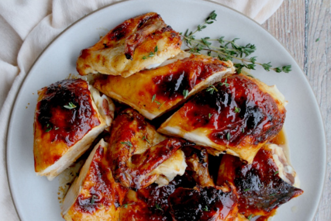

Honey-roasted Chicken

Description
A delicious and easy-to-make dish that is perfect for a weeknight meal.
The chicken is roasted in a sweet and savory sauce that is made with
honey, soy sauce, garlic, and ginger. This can be served with rice,
potatoes, or vegetables. It is also a great option for a party or potluck.
Ingredients
- 1 (4-5 pound) whole chicken, rinsed and patted dry
- 1/4 cup honey
- 1/4 cup soy sauce
- 2 cloves garlic, minced
- 1 tablespoon ginger, grated
- 1/4 teaspoon red pepper flakes (optional)
- 1 tablespoon olive oil
Steps
- Preheat oven to 400 degrees F (200 degrees C).
-
In a small bowl, whisk together the honey, soy sauce, garlic, ginger,
and red pepper flakes (if using).
- Rub the chicken all over with the olive oil.
- Pour the honey mixture over the chicken and rub it all over.
-
Place the chicken in a roasting pan and bake for 1 hour and 15 minutes,
or until the chicken is cooked through and the juices run clear when a
knife is inserted into the thickest part of the thigh.
- Let the chicken rest for 10 minutes before carving and serving.